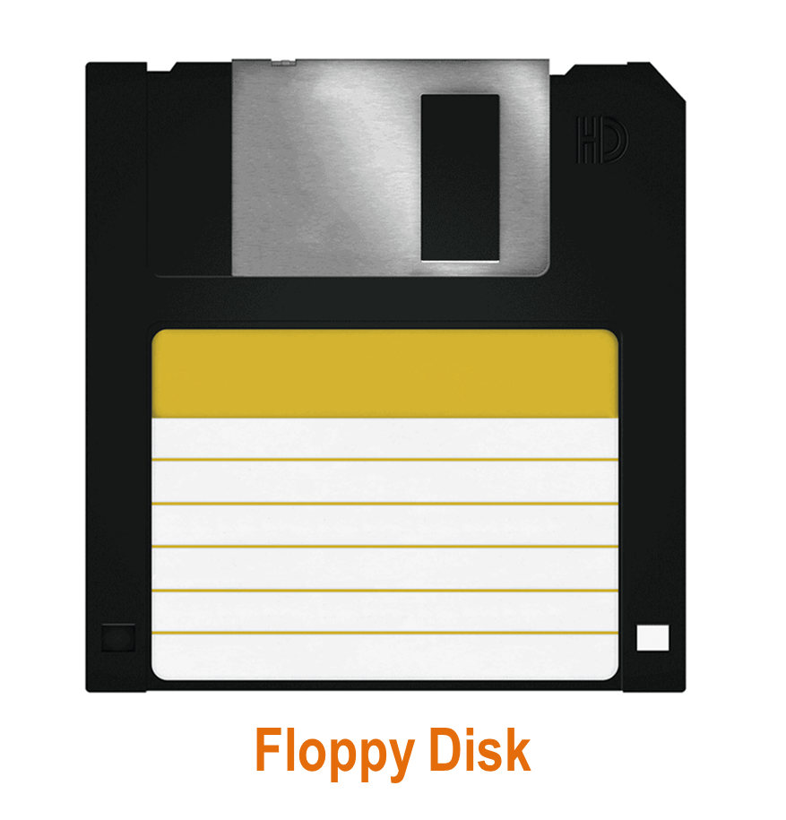
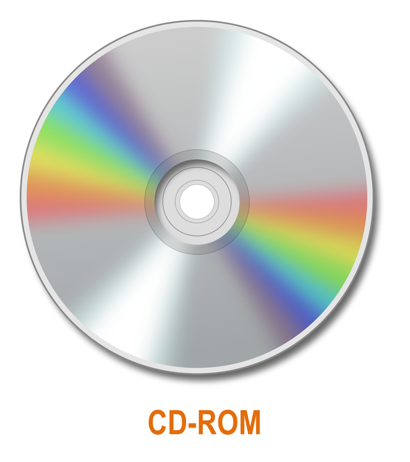
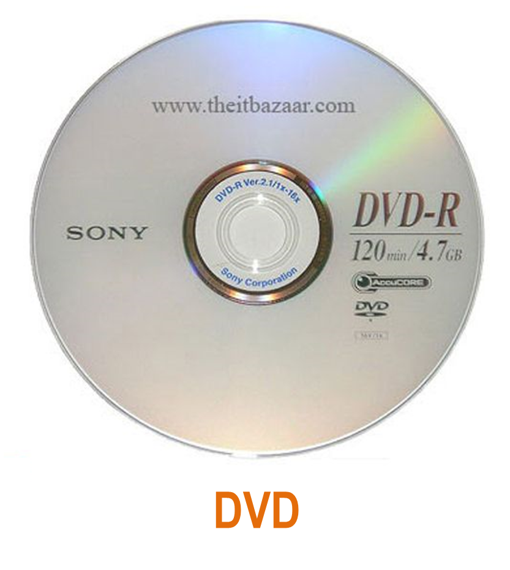

Computer data storage is a technology consisting of computer components and recording media that are
used to retain digital data. It is a core function and fundamental component of computers.
Storage, also known as mass media or auxiliary storage, refers to the various media on which a
computer system can store data.
Storage devices hold programs and data in units called files, files are stored in directories or folders.
Why is storage necessary ?
Storage :
Click here to comparison between memory (RAM) and storage
Types of storage technologies :
Hardware that reads and writes data in a serial (one after the other) fashion.
Hardware that reads and writes data without going through a sequence of locations.
Hardware that uses disks or tapes that are coated with magnetic material.
Hardware that uses laser beams to read data from plastic disks.
Devices that use nonvolatile memory chips to read and write data.
Storage hierarchy consists of three levels :
Also called primary storage, it is made up of the storage devices that are actively available to the computer system. User action is not required.
Also called secondary storage, it is not readily available to the computer system. The user performs an action, such as inserting a disk, to make it available.
Also called tertiary storage or archival storage, it is not readily available to the computer system. Devices such as tape backup units store data for archival purposes.
Storage Devices
Examples of storage devices :
We will get to know some information about each of them.

A floppy disk or floppy diskette (sometimes casually referred to as a floppy or diskette) is a type of disk
storage composed of a thin and flexible disk of a magnetic storage medium in a square or nearly square plastic
enclosure lined with a fabric that removes dust particles from the spinning disk. Floppy disks are read from
and written to by a floppy disk drive (FDD).
Its capacity is 720KB:1.44MB.
Its access time is about 100 ms.

A CD-ROM (Ccompact Disc Read-Only Memory) is a pre-pressed optical compact disc that contains data.
Computers can read—but not write or erase CD-ROMs, i.e. it is a type of read-only memory.
Data stored on CD-ROMs follows the standard CD data encoding techniques described in the Red Book specification
(originally defined for audio CD only). This includes cross-interleaved Reed–Solomon coding (CIRC),
eight-to-fourteen modulation (EFM), and the use of pits and lands for coding the bits into
the physical surface of the CD.
Its capacity is 650:900 MB.
Its access time is 80:800 ms.

The DVD (Digital Video Disc or Digital Versatile Disc) is a digital optical disc data storage format invented
and developed in 1995 and released in late 1996. The medium can store any kind of digital data and was widely
used for software and other computer files as well as video programs watched using DVD players. DVDs offer
higher storage capacity than compact discs while having the same dimensions.
Prerecorded DVDs are mass-produced using molding machines that physically stamp data onto the DVD.
Such discs are a form of DVD-ROM because data can only be read and not written or erased.
Blank recordable DVD discs (DVD-R and DVD+R) can be recorded once using a DVD recorder and then function
as a DVD-ROM. Rewritable DVDs (DVD-RW, DVD+RW, and DVD-RAM) can be recorded and erased many times.
DVDs are used in DVD-Video consumer digital video format and in DVD-Audio consumer digital audio format
as well as for authoring DVD discs written in a special AVCHD format to hold high definition material
(often in conjunction with AVCHD format camcorders). DVDs containing other types of information may be
referred to as DVD data discs.
Its capacity is 4.7:17.08 GB.
Its access time is 80:800 ms.


A hard disk drive (HDD), hard disk, hard drive, or fixed disk is an electro-mechanical data storage device
that stores and retrieves digital data using magnetic storage and one or more rigid rapidly rotating platters
coated with magnetic material. The platters are paired with magnetic heads, usually arranged on a moving actuator
arm, which read and write data to the platter surfaces. Data is accessed in a random-access manner, meaning that
individual blocks of data can be stored and retrieved in any order. HDDs are a type of non-volatile storage, retaining
stored data even when powered off. Modern HDDs are typically in the form of a small rectangular box.
Its capacity is up to 1 TB.
Its access time is 6:12 ms.